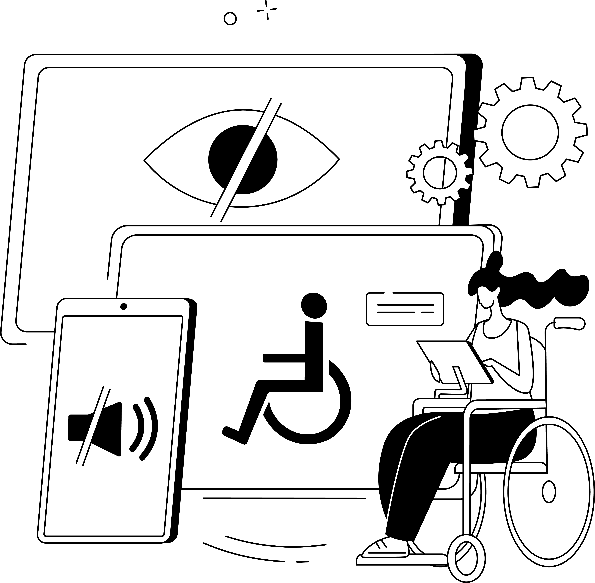

Barrierefreiheit ist für…

-
alle
Barrierefreiheit sorgt dafür, dass eine Webseite für alle und ohne Hindernisse nutzbar ist – ohne fremde Hilfe. Sie ist nicht nur für Menschen mit Beeinträchtigung wichtig, sondern nützt auch:
- Benutzer:innen mit langsamer Internetverbindung oder alter Technik
- Benutzer:innen mit geringen digitalen Kenntnissen
- Benutzer:innen mit anderen Muttersprachen
- …
-
Benutzer:innen mit einer Sehbeeinträchtigung oder -behinderung
Gut durchdachte Farbkonzepte mit ausreichendem Kontrast, skalierbare Layouts und gut lesbare Schriftarten helfen Menschen mit Sehbeeinträchtigungen. Ein optionaler Hochkontrastmodus kann zusätzlichen Komfort bieten.
Assistive Technologien wie Screenreader oder Braillezeilen benötigen eine klar strukturierte Website mit semantischem HTML und Alternativtexten für Bilder, um Inhalte verständlich wiederzugeben.
Kennst du eigentlich schon meine Tools zur Unterstützung deiner Barrierefreiheit?
- Interaktive Checkliste für einen ersten Eindruck der Barrierefreiheit
- Farbkontraste prüfen, für ein barrierefreies Farbkonzept
- Farbfehlsichtigkeit simulieren, um Farbcodierungen besser einschätzen zu können
-
Benutzer:innen mit einer motorischen Einschränkung
Für Menschen mit motorischen Einschränkungen muss die Navigation besonders benutzerfreundlich sein. Die Webseite sollte vollständig per Touchscreen, Joystick, blick- oder mundgesteuertem Cursor sowie Tastatur bedienbar sein. Schaltflächen müssen ausreichend groß und mit genügend Abstand platziert sein.
Neben dem Design sind auch technische Anpassungen erforderlich.
-
Benutzer:innen mit einer Hörbeeinträchtigung
Einige Gehörlose haben Schwierigkeiten mit der Schriftsprache, da ihnen die Lautsprache fehlt. Eine Version in Leichter Sprache kann hier unterstützen.
Videos lassen sich leicht mit Untertiteln versehen, für Audio-Inhalte können Transkripte bereitgestellt werden.
-
Benutzer:innen mit anderen Beeinträchtigungen
Animationen sollten vorsichtig eingesetzt werden, da sie bei Epilepsie oder vestibulären Störungen Schwindel, Kopfschmerzen oder sogar Anfälle auslösen können. Blinkende Effekte sollten vermieden werden.
Für Menschen mit Lernschwierigkeiten oder geringen Deutschkenntnissen kann ebenfalls ein Angebot in einfacher oder leichter Sprache hilfreich sein.
-
Dich
Barrierefreies Webdesign erweitert die Reichweite von Unternehmen, Vereinen und Institutionen – oder einfach von deiner Website.
Ein nutzer:innenfreundliches Bedienkonzept und schnelle Ladezeiten reduzieren die Absprungrate und bieten dir wirtschaftliche Vorteile! Zudem verbessert Barrierefreiheit die Suchmaschinenoptimierung.